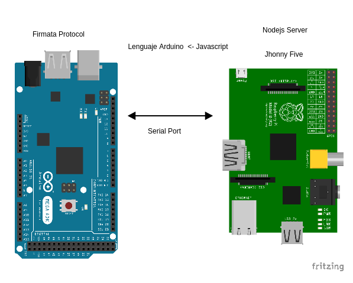

Proyecto Voyager¶
En sitio estara la documentacion, software y recursos audiovisuales asociados al Proyecto Voyager realizado en el curso de ingenieria del Software I y II.
Voyager is an Arduino bot controlling from a web browser using Nodejs on Docker for Raspberry pi
Presentacion¶
Contenidos¶
Los contenidos estan organizados desde un pequeña introduccion y justificacion del porque de este proyecto, seguido de una analisis de requerimientos formal para asi obtener la mejor arquitectura y diseño posible de tanto el software como el hardware que cumpla con el objetivo de este proyecto.
Note
La foto acontinuacion corresponde el primer prototipo con una placa de Ardunio MEGA 2560, una Raspberry Pi B+ con su camara, un sensor LM35 y puente H LN28N. La Rpi se conecta a la Wifi y se comunica con el Arduino via serial.

Configuracion inicial¶
Para empezar a desarrollar con este proyecto es neserio realizar una configuracion incial, y la conexion de los dispositivos de hardware.
Acontinuacion la lista de dispositivos a utilizar y las dependencias de software
Hardware¶
- Raspberry pi
- Camera board
- Usb Wifi dongle
- Arduino
- DC Motors
- H bridge
- Sensors
Arquitectura¶
Asi sera la conexion basica entre el Ardunio y la Raspberry pi, y la interaccion de las partes de software
En la Fig.1 podemos observar que la forma de comunicacion entre la reaspberry y el ardunio es via serial, utlizando una libreria de Nodejs llamada serial port.

En la Fig.2 se utliiza un servidor HTTP basico de Express con Socket.io para escuchar eventos en el navegar en tiempo real utilizando Javascript.

Software¶
- Firmata (Arduino)
- Nodejs
- Jhonny-five
- Socket.io
Primeros pasos¶
Lo primero que debemos hacer es hacerle un “flash” a la targeta de Ardunio con el protocolo Firmata.
Para este experimeinto usamos una version modificada de Firmaata que funciona con sensores de proxomidad servor motor.
En src/sketch.ino esta listo el archivo para subir a la placa. Para hacer esto utlizamos la herramienta de linea de comandos ino
Instalar picocom¶
La herramienta de linea de comandos picocom nos ayudara con la comunicacion serial desde la Raspberry pi.
$ wget https://picocom.googlecode.com/files/picocom-1.7.tar.gz
$ tar -xvzf picocom-1.7.tar.gz
$ cd picocom-1.7
$ sudo make
$ sudo make install
Una vez instaladas las depencias podemos ahora instalar ino usando
pip o easy_install
$ pip install ino
Configurando ino¶
Editamos el archivo ino.ini con las especificaciones de la placa de Ardunio y los puertos que usa.
[build]
board-model = mega2560
[upload]
board-model = mega2560
serial-port = /dev/ttyACM0
[serial]
serial-port = /dev/ttyACM0
Instalando el Protocolo Firmata¶
Compilamos el archivo en src/sketch.ino utlizando ino.
$ ino build
y lo subimos a la placa.
$ ino upload
Instalando las dependencias NPM¶
Ahora que la placa de Arduino esta lista, podemos utulizar Nodejs con Jhonny-five.
Debemos asegurarnos que este instalado Nodejs y npm en la Raspberry pi.
$ npm install
Luego que termine la instalacion, conectamos el Ardunio a la Raspberry pi, corremos la app:
$ node app.js
Observaremos lo siguiente:

Servidor y cliente¶
Configuramos un servidor HTTP en app.js
app.listen(8000, function () {
console.log('Http server listening on port %d', 8000);
});
Con eso podremos acceder desde el navegador al cliente Socket.
Para manejar eventos utilizamos jQuery y keypress con la finalidad de detectar cuando una tecla es presionada y hacer un socket emit, asi:
"keys": "up",
"on_keydown": function() {
console.log("Client: Going forward");
socket.emit('goForward');
Del lado del servidor escuchamos este emit utilizando socket on
socket.on('goForward', function(){
console.log("Server: Going forward! ");
// Do something
});
Running in a Docker container¶
Los contenedores son una muy buena idea para los proyectos de la Iot porque podemos aislar a nuestra aplicación en un nivel de kernel y eso significa portabilidad en cualquier plataforma que soporte Docker, esto garantiza un despliegue rápido de aplicaciones, algo que es crucial para proyectos de Iot.
Pero Docker, que es un estándar de facto, no es compatible con ARM. Asi que aun no es complatible con Raspberry Pi, afortunadamente, algunos hackers han modificado una Distro De Raspberry Pi, que llamaron Hypriot.
Para esto instalamos Hypriot de esta guia
Nos logeamos a la Rasberry pi.
Clonamos el repo
$ git clone https://github.com/juliocesar-io/voyager-bot.git
cd voyager-bot
Compilamos la imagen
$ docker build -t <your_tag_name> .
Conectamos el Ardunio(Con Firmata ) a la Raspberry pi.
Ejecutamos el contenedor.
$ docker run --device=/dev/ttyACM0 <your_tag_name>
- Es importante definir buen el puerto con el flag
--device=/dev/ttyACM0, si no sabemos el puerto podemos consultarlo con lsusb.
Vamos al navegador y probamos que todo funcione en http://<container_ip>:3000